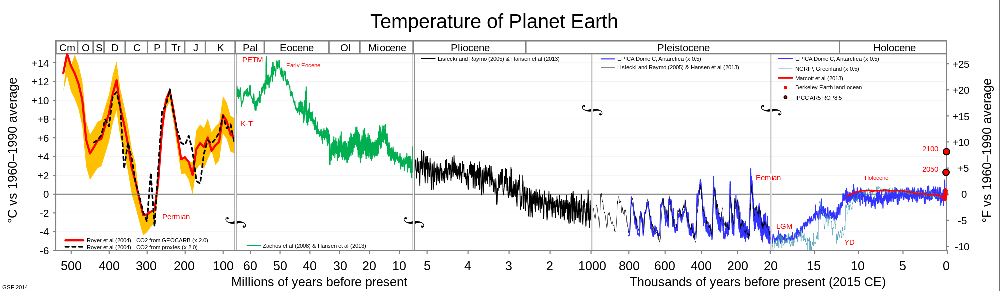

Ancient Earth
The Story of Ice and Stone
Geologic Temperature History
Geologic temperature studies indicate that the ancient world was much warmer than it was today. 500 million years ago, global temperatures averaged 25 degrees Fahrenheit hotter than the temperatures we currently see. The extent of this warming is considerable, and dwarfs many of the temperature estimates established by climatologists for the pace of warming over the next 100 years of ramping global industrialization.
From the chart above, it’s clear that the earth has gone through an enormous transformation leading up to the last million years. The Pleistocene era has demonstrated a more consistent undulation of global temperatures, the majority of which are up to 10 degrees Fahrenheit cooler than today.

Ice Ages
A large concern with contemporary discussions around global warming is the accelerating retreat of glaciers thoughout the world. Since its inception, geologic evidence suggests that the earth has endured 5 major ice ages, the most recent of which is the Quaternary Ice Age, When outside of an ice age, the earth is ice free, even in the most extreme southern and northern regions.
Although the precise reasons that underpin the beginning of an ice age are still largely unknown, scientists believe that fluctuations in ocean currents, continental positioning, atmospheric changes, volcanism and anomalies in the earth’s orbit all contribute to the earth's climate. Changes in the ocean currents and continental positioning influence the earth’s ability to build glaciers. Exposed land allows precipitation to freeze and accumulate. Meanwhile, the currents contribute in their role to effectively bring warm water from the equator to both the north and south poles. When continental land masses are positioned in a way that inhibits the flows of this warmer water, the glaciers in the extremes can grow more quickly which can establish a positive feedback loop due the albedo effect. Ice and snow provide a reflective surface for radiation to be bounced back into space. Another effect of continental shifting is the raising of land above the snowline. Increased altitude allows regions that would otherwise be source of heat to capture and store ice, leading to reduced temperatures. Meanwhile, volcanism and forest expansion/loss contribute to the amount of the greenhouse gases in the atmosphere that serve to trap radiation in the atmosphere. Lastly, the cycles which dictate the changes in the earth’s orbit, whether dealing with the length of orbit (distance from sun) or the incline of the orbit (which deals with which regions receive the most solar radiation) might play a large factor in the undulation between glacial maximums and minimums. Since the beginning of the Quaternary Ice age, the earth’s movements help account for changes in the climate over thousands of years, as hypothesized by Milutin Milankovich. These eccentricities change on a roughly 100,000 year cycle between +3% and – 2% from current levels.

Rising Oceans, Melting Glaciers
Concern around the largely retreating glaciers around the world prompted us to look to the data to see how sea level height (and the inversely related glacier mass) have changed in the last fifteen thousand years.
The visualization below was created from Antarctic ice core data and serves to demonstrate that there has been significant movement in sea levels prior to the explosion of human population. Furthermore, it is evident that glaciers have been melting significantly despite a relatively flat CO2 level. This suggests that the initial warming may have been due to the confluence of factors mentioned in the previous section, and a significant portion of glacial retreat is due to a natural process set in motion way before our time. This is not to say that there is no cause for concern, however, as the spike in CO2 levels in recent years will definitely lead to other potentially disastrous effects as we will discuss in the following sections.